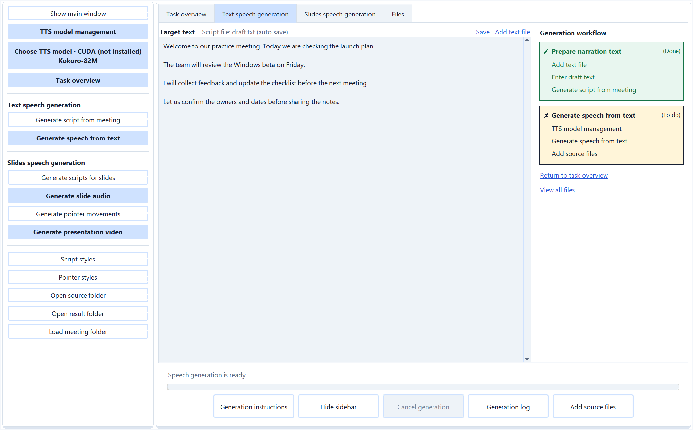
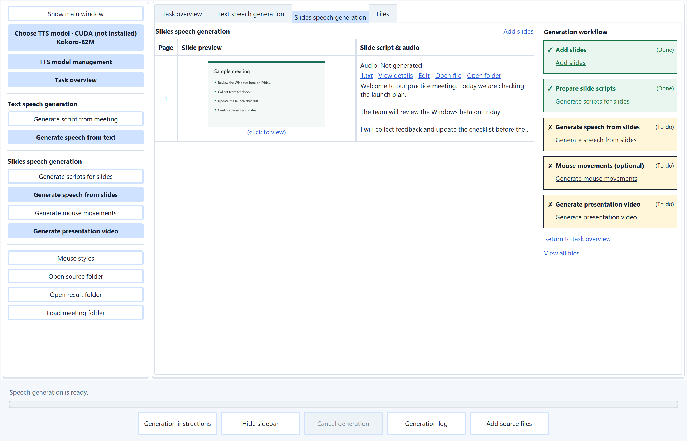

Live transcription
Read confirmed speech as the meeting continues, with draft previews while recognition catches up. Transcribe your microphone and selected system or app audio locally.
AUDIO, VISUALS AND AI NOTES · WINDOWS

Follow speech with live local transcripts and AI translation. Capture audio, screenshots and video, then use selected text, images and PDFs for AI questions and summaries.
For meetings, lectures, videos, podcasts and everyday ideas.
Modern local speech models. Clear, responsive transcription.
Choose the installer EXE or portable ZIP on GitHub Releases.
Beta v0.1 is free. No payment details required.
MEETSIMPLER HIGHLIGHTS
Choose what you hear, capture what you see, and decide which context your AI receives.
Read confirmed speech as the meeting continues, with draft previews while recognition catches up. Transcribe your microphone and selected system or app audio locally.
Translate confirmed speech and summarize completed transcript chunks. Analyze selected text, a time range or the full transcript with independent Summary and Translation switches.
Explore the Analysis workspaceChoose supported STT models from Qwen3-ASR, Whisper, Parakeet and other families to suit your language, hardware and accuracy needs.
Run installed speech models locally on CPU or a supported NVIDIA GPU. Audio does not need to go to a cloud transcription service.
Revisit overlapping audio and verify agreement between decodes to help reduce omissions at boundaries and repeated text, with responsive live previews.
Keep audio, video, transcripts, screenshots and summaries together locally. Generate descriptive folder names from the transcript or add your own suffix.
Name and organize meetingsSave online API connections and installed local models in AI provider config. Check one configuration to use it for chat, summaries and script generation; specialist local translation is selected separately.
Explore OpenRouter modelsFollow live chunk summaries, ask questions in AI chat, or generate partial and final summaries. Dictate messages with optional automatic sending. Fold conversations, update answers or cancel individual requests while other work continues. Inspect each prepared request's model, input types and file sources.
Chat voice input · Inspect AI request detailsKeep summaries connected with earlier summaries and a running meeting memory. Review key points and their evidence ranges as the discussion develops.
Live summaries and running memoryChoose a microphone and system or app audio for transcription and video sound. Select multiple screenshot and video sources independently from the desktop, application windows and cameras.
Record selected desktop, application window and camera sources to separate local MP4 files with your selected audio. Preview a source before starting and choose resolution, frame rate and quality.
Combine the transcript with selected screenshots, images and PDFs through Meeting context config. Enable those files for each summary type and use a model that supports them.
Turn a draft or meeting notes into local speech, or create narrated slide videos with optional pointer highlights. Review scripts, choose a voice and language, then find audio and MP4 outputs in Results.
Generate speech and presentation videosCapture selected sources or drag an area, use global shortcuts, or take screenshots automatically at your chosen interval.
Automatic screenshot capture skips images below your chosen change threshold. Manual captures always save. Screenshots stay organized by visual source inside the meeting folder.
Online profiles send enabled content to your chosen provider and need your own API credentials; charges may apply. Local AI runs through installed Ollama models. Account activation and renewal remain separate from either AI choice.
FROM CONVERSATION TO CLARITY
Choose audio sources, capture useful visuals, or import a recording. Get permission before capturing other people or their content.
Follow live transcripts and rolling summaries. Add selected visuals to meeting context and ask your AI provider to explain the discussion and supporting material.
Keep records together, give the meeting a descriptive name, and revisit transcripts, screenshots and summaries. Review important AI-generated details.
LOCAL SPEECH AI
Choose from recent STT model families, including Qwen3-ASR, NVIDIA Parakeet and Whisper. Switch between supported models to match your language, accuracy needs and available hardware.
0.6B · 1.7B
Multilingual speech recognition with automatic language detection. Choose the compact 0.6B model or the larger 1.7B model.
Model detailsTDT 0.6B v3
Efficient recognition across 25 European languages, with automatic language detection and punctuation.
Model detailsMultilingual transcription with faster decoding than the full Whisper large-v3 model.
Model detailsAn efficient distilled model for English transcription, designed for a practical balance of speed and accuracy.
Model detailsInstall a supported model and run speech recognition on your Windows PC. Cloud AI chat and summaries use your configured provider separately. Model availability depends on the app version; choose a CPU-compatible model or a supported NVIDIA GPU with CUDA. Larger models need more memory.
OVERLAP DECODING AND VERIFICATION
Our overlap decoding and verification pipeline revisits recent audio and checks agreement between successive results. This helps preserve words at audio boundaries and reduce repeated or unstable text while live previews keep you up to date.
Revisit recent speech so words near an audio boundary have more surrounding context.
Compare successive decodes and reconcile overlap before publishing stable text.
Show draft previews as speech continues, with selectable presets to balance latency, context and processing load.
Speed and accuracy depend on the model, device, audio quality and pipeline settings.
Set up local transcriptionBuild a training voice-over, listen to a meeting recap, or turn slides into a narrated lesson. Draft and revise the text, choose a local voice, and keep generated audio and video with your meeting.
Write or import a narration draft, or turn meeting notes and slides into a script with AI. Choose a script style, target language and detail level, then review the wording before generating speech.
Choose an installed TTS model, language and voice. Use built-in speakers or a permitted reference recording when the model supports it, then generate and review the saved audio.
Import PDF, PowerPoint or slide images, prepare narration for each slide, and generate its audio. Add optional pointer highlights, then export an MP4 presentation video.
Speech synthesis runs with installed local TTS models. AI-written scripts and AI-generated highlights use your active online or local AI profile. PowerPoint conversion requires LibreOffice.


Choose a model for your language, device and voice needs. MeetSimpler offers built-in voices and reference-voice options across these speech model families.
Choose 0.6B or 1.7B. CustomVoice variants provide built-in speakers; Base variants clone a reference voice and accept an optional transcript. Includes English, Chinese, Japanese and Korean.
Model detailsA compact 82-million-parameter model with built-in voices matched to the selected language. A practical starting point for narration without reference audio.
Model detailsA multilingual 2B model that infers language from the text. Generate speech directly or use an optional reference voice; a reference transcript is optional.
Model detailsMultilingual reference-based speech generation. This integration requires both reference audio and its matching transcript. Review installation prerequisites in TTS model management.
Model detailsGenerate speech in 23 supported languages, including English, Chinese, Japanese and Korean. Choose the speech language explicitly; a reference voice is optional.
Model detailsAn English speech option with optional reference-voice support. Choose it for English narration and check the reference duration requirements before generating.
Model detailsInstall only the models you need. CPU or CUDA availability, language coverage, download size and memory needs vary by model. Check the app for the options supported by your version and device, and review each model license.
Choose a TTS modelRun chat, meeting summaries and script generation on your PC through Ollama. Save local profiles beside online profiles and choose which one handles your AI work.
The built-in catalogue includes Qwen models for local chat, summaries and narration scripts. Smaller choices use less memory; larger choices need more capable hardware.
Model detailsGemma models provide another local AI family in the app. Use a supported vision model when your task includes slide previews or image attachments, and test the profile before saving it.
Model detailsDownloads require internet access. General local AI requires a supported NVIDIA or AMD GPU, while account activation and renewal remain separate. Local requests do not silently switch to an online provider.
Set up local AI and translationHY-MT1.5 and TranslateGemma are specialist translation choices. Select them separately from the general AI profile; specialist translation can run on CPU.
Tencent's translation-focused family. MeetSimpler offers 1.8B and 7B models; 1.8B is the app's lightweight choice for live translation. HY-MT can use preceding transcript context.
Model detailsGoogle's translation-focused Gemma family. MeetSimpler offers 4B and 12B variants. TranslateGemma translates each speech segment independently, with language-pair coverage determined by the model.
Model detailsSpecialist translation runs locally on CPU or supported GPU hardware and needs no online provider API key. Model downloads and account activation still need internet access. Supported language pairs depend on the chosen model.
Use the same recording, transcription and AI tools for work, learning and personal projects. Ask AI chat for the format you need; these are ways to use MeetSimpler, not separate app modes.
Follow live transcripts and rolling summaries, then ask for structured study notes, revision questions and explanations of difficult concepts.
Import a video to extract its spoken key points without watching it from beginning to end. Use the transcript to decide what to revisit.
Summarize long conversations into main arguments, examples and takeaways. Ask follow-up questions about the transcript.
Capture discussions and review summaries of decisions, action items and unresolved questions.
Collect key takeaways and audience questions, and ask how the speaker's ideas relate to your work.
Turn spoken instructions into reference notes, procedures and checklists you can consult later.
Organize responses by topic, explore recurring themes and return to relevant passages in the transcript.
Extract stated needs, objections, feedback and commitments to prepare a useful follow-up.
Capture explanations of systems, requirements and troubleshooting steps, then ask AI to clarify unfamiliar terms.
Review transcribed speech and ask AI to explain vocabulary, idioms and sentence meaning.
Speak through plans, ideas or reflections, then ask AI to organize them into an outline or task list.
Preserve ideas from a conversation and develop them into proposals, story outlines or project briefs.
Video imports transcribe the audio track. To include slides, charts or demonstrations in AI summaries, capture screenshots and add the selected images through Meeting context config.
The app still uses meeting labels. Use Start meeting for live audio or Import audio for an audio or video file. Default summaries focus on meetings; use AI chat or customized prompts for other formats.
See how to use the existing controlsA summary is a starting point. In AI chat, enable Meeting context: On and Transcript context: On to ask for explanations, examples or notes that fit your goal.
YOUR WORKSPACE, YOUR CHOICES
Meeting recordings, transcripts, summaries, chat history and speech-generation work are saved locally. Ollama and its downloaded models use separate storage. Cloud AI sends only the request content you enable to the configured provider; local AI and specialist local translation run on your PC.
MeetSimpler uses Supabase for accounts and access renewal. Renewal sends account details and a device identifier; the server records your IP address. Meeting content is not sent to the access service.
Read the privacy policy ↗BETA V0.1
Create an account with email and password, or choose Google or GitHub sign-in. No card required. Create your account or log in.
The app checks for updates at startup. Install any required update it finds before continuing. If the check is unavailable, a valid seven-day access permit still allows offline startup. Connect to activate or renew access while the free beta remains available. Cloud AI requires an internet connection and your provider's credentials; provider charges are separate.
Paid plans may arrive later. No automatic charge or paid enrolment. Optional cloud AI providers may charge separately.
Questions about the beta?
meetsimpler@gmail.com ↗